В этом уроке:
- изучаем drawable теги: <level-list>, <transition>, <inset>, <clip>, <scale>
Продолжаем разбирать типы Drawable, которые можно описывать с помощью XML-разметки. Проектов в этом уроке создавать не будем. Я просто буду в своем проекте создавать XML-файлы в папке drawable и ставить их фоном для View. А в тексте урока приведу код и скрины. Иногда буду вешать дополнительно серый фон, чтобы был виден реальный размер View.
Чтобы программно добраться до Drawable, который вы для View повесили как фон, надо просто вызвать метод getBackground.
Level List
Тег <level-list> позволяет отображать Drawable в зависимости от значения level. Рассмотрим пример, где будем отображать три разных Drawable: если level=0, то зеленый прямогуольник; если 1, то желтый; если 2, то красный. Создадим три Drawable
rect_red.xml:
<?xml version="1.0" encoding="utf-8"?>
<shape
xmlns:android="http://schemas.android.com/apk/res/android"
android:shape="rectangle">
<solid
android:color="#ff0000">
</solid>
</shape>Красный прямоугольник
rect_yellow.xml:
<?xml version="1.0" encoding="utf-8"?>
<shape
xmlns:android="http://schemas.android.com/apk/res/android"
android:shape="rectangle">
<solid
android:color="#ffff00">
</solid>
</shape>Желтый прямоугольник
rect_green.xml:
<?xml version="1.0" encoding="utf-8"?>
<shape
xmlns:android="http://schemas.android.com/apk/res/android"
android:shape="rectangle">
<solid
android:color="#00ff00">
</solid>
</shape>Зеленый прямоугольник
levels.xml:
<?xml version="1.0" encoding="utf-8"?>
<level-list
xmlns:android="http://schemas.android.com/apk/res/android">
<item
android:drawable="@drawable/rect_green"
android:maxLevel="0">
</item>
<item
android:drawable="@drawable/rect_yellow"
android:maxLevel="1">
</item>
<item
android:drawable="@drawable/rect_red"
android:maxLevel="2">
</item>
</level-list>Level List, в котором мы указываем какой Drawable при каком максимальном уровне (maxLevel) отображать.
Менять уровень у Drawable мы можем методом setLevel. Ставим 0 (по умолчанию)
Результат:
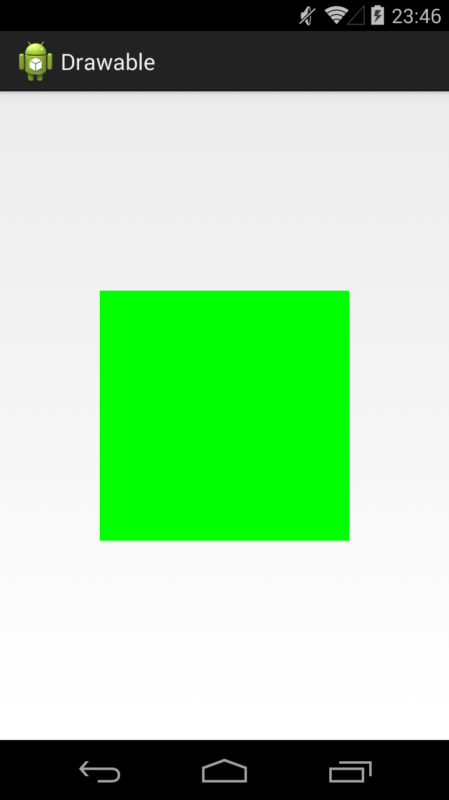
Ставим 1
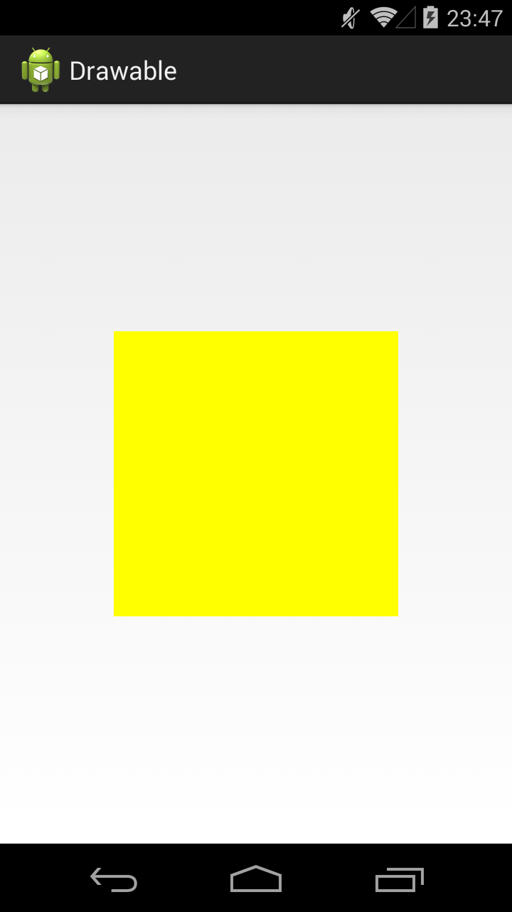
Ставим 2
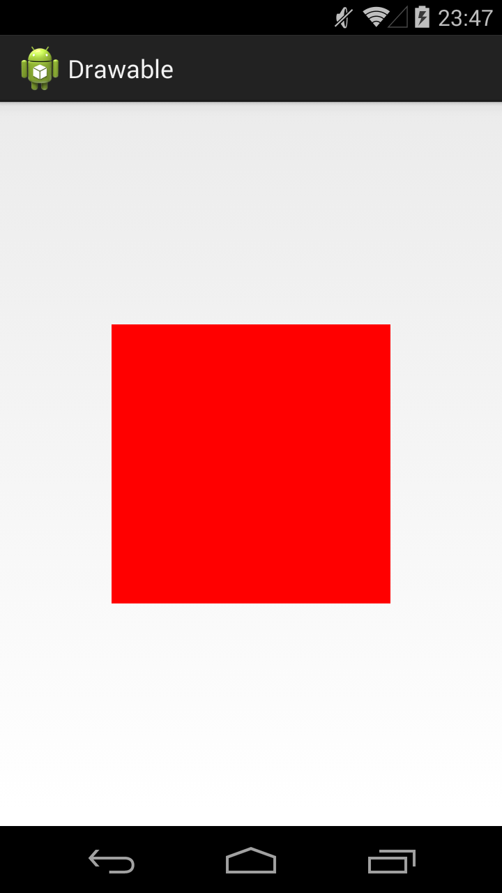
В соответствии с заданным уровнем отображается Drawable.
Кроме атрибута maxLevel можно также использовать атрибут minLevel для указания минимального значения.
Java-реализация – класс LevelListDrawable.
Transition Drawable
Тег <transition> позволяет указать два Drawable и программно переключаться между ними с fade-эффектом и указанием продолжительности перехода.
XML выглядит так:
<?xml version="1.0" encoding="utf-8"?>
<transition
xmlns:android="http://schemas.android.com/apk/res/android">
<item
android:drawable="@drawable/rect_green">
</item>
<item
android:drawable="@drawable/rect_yellow">
</item>
</transition>Также у item есть атрибуты left, top, right, bottom для задания отступа.
В коде, для переключения между Drawable используются методы startTransition и reverseTransition. Оба метода принимают на вход количество мсек, которое будет длиться переход.
Java-реализация – класс TransitionDrawable.
Inset Drawable
Насколько я понял – это просто обертка Drawable, которая позволяет указать padding-отступы. Корневой тег – <inset>, атрибуты отступа insetLeft, insetTop, insetRight, insetBottom.
Java-реализация – класс InsetDrawable
Clip Drawable
Тег <clip> позволяет обрезать Drawable по горизонтальной и (или) вертикальной оси. Какая часть картинки будет обрезана зависит от значения level. Используемый диапазон тут от 0 до 10000, где 0 - картинка полностью обрезана и не видна, 10000 - картинка видна полностью. Атрибут gravity позволяет указать направление урезания.
Рассмотрим несколько примеров.
Устанавливаем программно (методом setLevel) уровень в 7000. А XML рисуем такой:
<?xml version="1.0" encoding="utf-8"?>
<clip
xmlns:android="http://schemas.android.com/apk/res/android"
android:clipOrientation="horizontal"
android:drawable="@drawable/ic_launcher"
android:gravity="left">
</clip>Ось - горизонтальная, направление - влево. Т.е. картинка обрезается по горизонтали справа-налево до 70% (7000 от 10000).
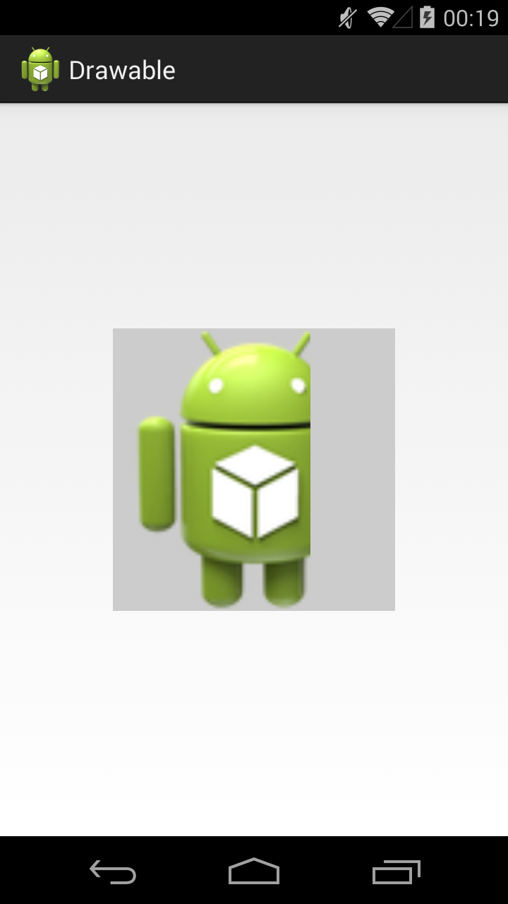
Уровень установим в 2000, а xml делаем таким:
<?xml version="1.0" encoding="utf-8"?>
<clip
xmlns:android="http://schemas.android.com/apk/res/android"
android:clipOrientation="vertical"
android:drawable="@drawable/ic_launcher"
android:gravity="top">
</clip>Картинка обрезается по вертикали снизу вверх до 20%
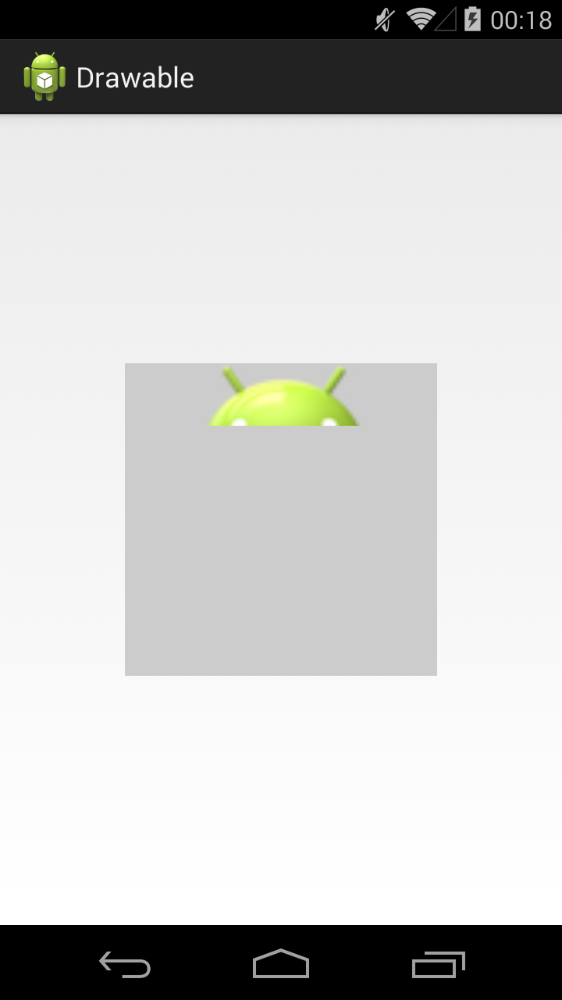
Уровень 5000, xml:
<?xml version="1.0" encoding="utf-8"?>
<clip
xmlns:android="http://schemas.android.com/apk/res/android"
android:clipOrientation="horizontal|vertical"
android:drawable="@drawable/ic_launcher"
android:gravity="right|bottom">
</clip>Картинка обрезается по обоим осям вправо и вниз до 50%
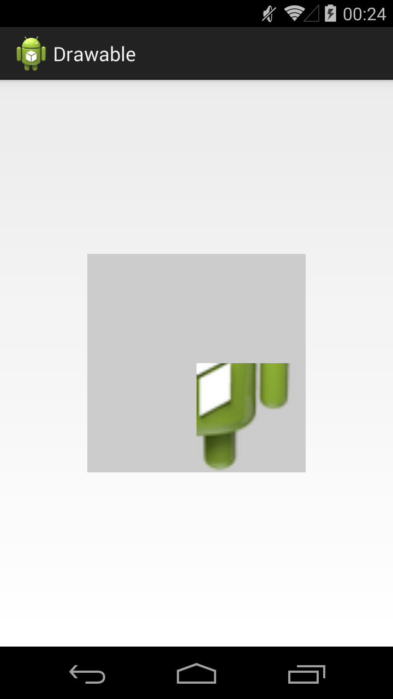
Уровень 6000, xml:
<?xml version="1.0" encoding="utf-8"?>
<clip
xmlns:android="http://schemas.android.com/apk/res/android"
android:clipOrientation="horizontal"
android:drawable="@drawable/ic_launcher"
android:gravity="center">
</clip>Картинка обрезается по горизонтали к центру до 60%
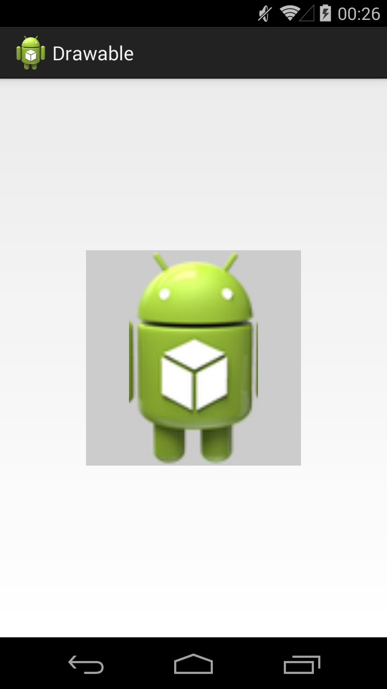
Java-реализация – класс ClipDrawable
Scale Drawable
Тег <scale> позволяет сжать картинку по горизонтальной (scaleWidth) и (или) вертикальной (scaleHeight) оси и сместить полученное изображение в указанную часть (scaleGravity) доступного пространства.
У меня этот тип Drawable работал только, если установить ему level > 0.
Рассмотрим примеры
<?xml version="1.0" encoding="utf-8"?>
<scale
xmlns:android="http://schemas.android.com/apk/res/android"
android:drawable="@drawable/ic_launcher"
android:scaleGravity="left"
android:scaleWidth="30%">
</scale>Сжимаем на 30% по горизонтали и смещаем влево.
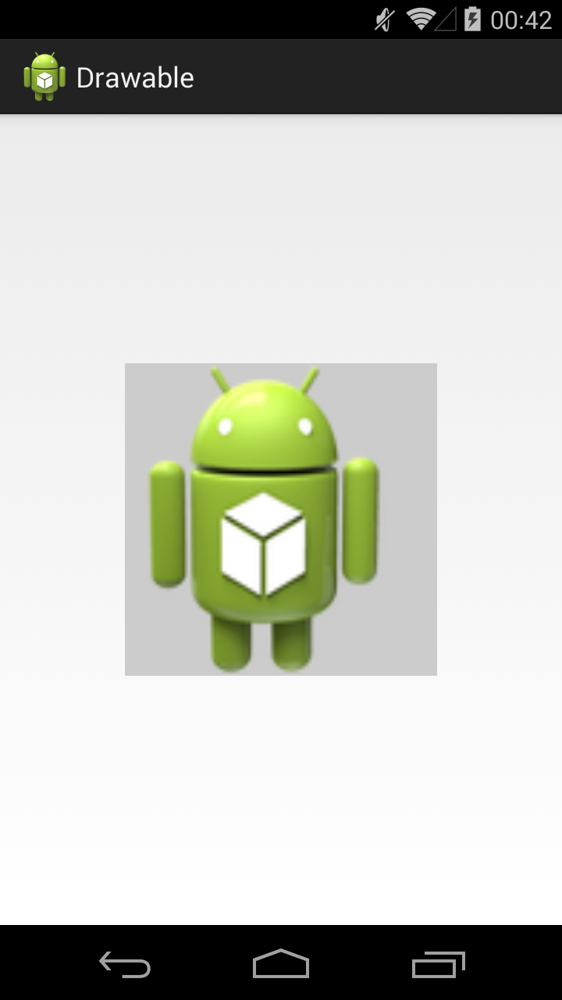
<?xml version="1.0" encoding="utf-8"?>
<scale
xmlns:android="http://schemas.android.com/apk/res/android"
android:drawable="@drawable/ic_launcher"
android:scaleGravity="bottom"
android:scaleHeight="70%">
</scale>Сжимаем на 70% по вертикали и смещаем вниз.
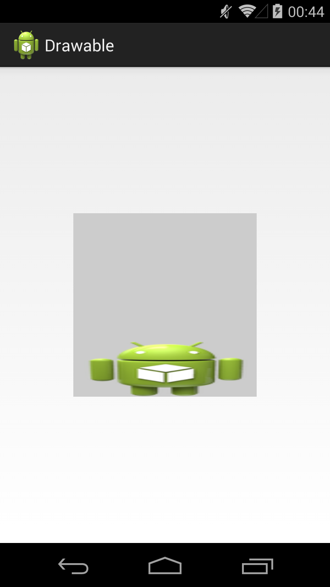
<?xml version="1.0" encoding="utf-8"?>
<scale
xmlns:android="http://schemas.android.com/apk/res/android"
android:drawable="@drawable/ic_launcher"
android:scaleGravity="bottom|right"
android:scaleHeight="50%"
android:scaleWidth="50%">
</scale>Сжимаем на 50% по обоим сторонам и смещаем вправо-вниз.
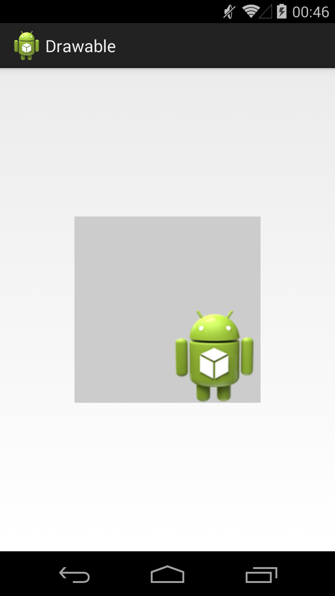
<?xml version="1.0" encoding="utf-8"?>
<scale
xmlns:android="http://schemas.android.com/apk/res/android"
android:drawable="@drawable/ic_launcher"
android:scaleGravity="center"
android:scaleHeight="60%"
android:scaleWidth="40%">
</scale>Сжимаем на 40% по ширине и 60% по высоте, и смещаем в центр
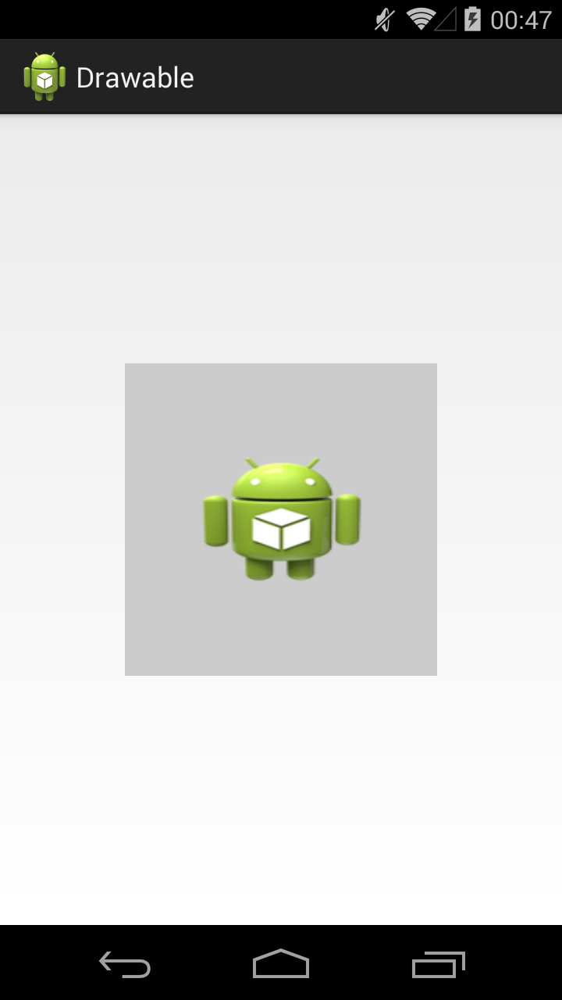
Java-реализация – класс ScaleDrawable
Animation drawable
Тег <animation-list> дает возможность устроить слайд-шоу из нескольких Drawable. Для этого надо указать все используемые Drawable и время отображения для каждого из них.
anim.xml:
<?xml version="1.0" encoding="utf-8"?>
<animation-list xmlns:android="http://schemas.android.com/apk/res/android" android:oneshot="true">
<item android:drawable="@drawable/rect_green" android:duration="500"></item>
<item android:drawable="@drawable/rect_red" android:duration="500"></item>
<item android:drawable="@drawable/rect_yellow" android:duration="500"></item>
</animation-list>Список Drawable с указанием времени отображения для каждого. Атрибут oneShot установленный в true говорит системе о том, что воспроизведение нужно только один раз. Если поставить false, то анимация будет циклично повторяться.
Чтобы запустить процесс анимации, необходимо получить Drawable, привести его к типу AnimationDrawable и вызвать метод start.
Java-реализация – класс AnimationDrawable.